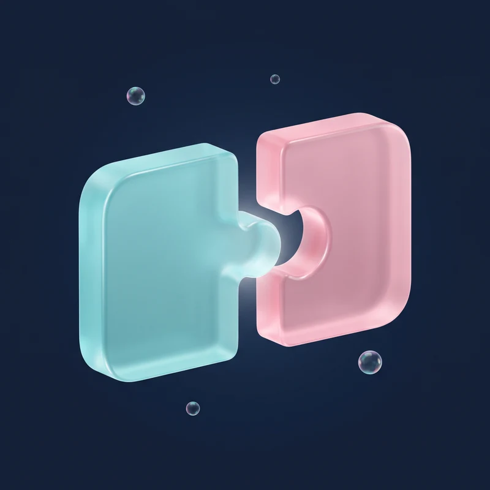
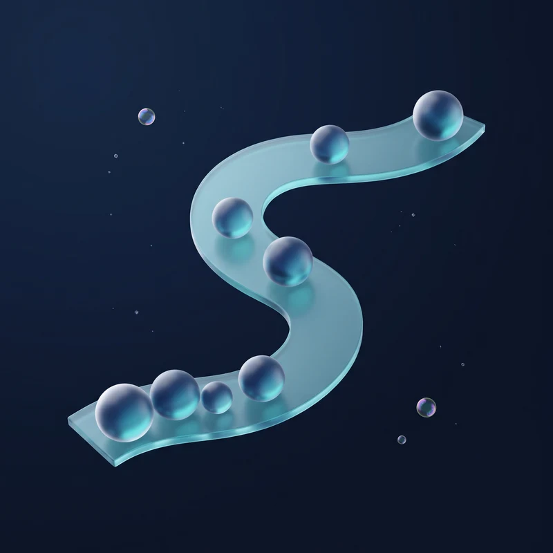

Organismes de formation
Vos clients veulent plus de pratique. Refaire tout votre catalogue prendrait des mois.
Le résultat : des séances plus actives, une progression suivie par session.
Simulations de gestion clés en main
Des simulations de gestion en ligne, clés en main ou sur mesure, guidées par un coach IA. Vos apprenants appliquent les notions, mesurent les conséquences de leurs choix et progressent en une séance.
Modèle simplifié, donné à titre d'exemple. Bougez un curseur : tout se recalcule.
Ce que vous vivez
Vous expliquez la théorie, les apprenants hochent la tête. Mais décideront-ils seuls, le moment venu ? Il leur manque l'occasion d'essayer, de voir les conséquences et d'ajuster.
Vos clients veulent plus de pratique. Refaire tout votre catalogue prendrait des mois.
Le résultat : des séances plus actives, une progression suivie par session.
Vos étudiants retiennent les notions, mais peinent à les relier à l'entreprise, surtout en alternance.
Le résultat : une classe qui participe, des situations concrètes, une progression visible par le formateur.
Vos équipes comprennent vite en salle, puis retrouvent leurs habitudes dès leur retour au poste.
Le résultat : une vision globale de l'activité, des réflexes ancrés par la pratique.
Vos agents arbitrent chaque jour entre budget, priorités et règles. Il est rare de pouvoir s'y entraîner sans risque.
Le résultat : des décisions pesées en équipe, des réflexes partagés entre services.
Notre dispositif
Le dispositif s'adapte à votre public, à votre niveau et au temps dont vous disposez. Clé en main avec une simulation du catalogue, ou sur mesure : votre secteur, vos données, votre vocabulaire.
Nous fixons ensemble vos objectifs pédagogiques, votre public et la durée de la séance.
Les participants pilotent une activité en ligne. Chaque décision a des conséquences sur les résultats.
Vous animez seul, avec mon guide d'animation, ou je conduis la séance pour vous.
La plateforme
Le formateur ouvre l'accès, suit la progression et récupère les travaux à évaluer. Les participants entrent avec leur code.
Le catalogue
Le catalogue est visible de tous. L'accès aux simulations est réservé aux groupes inscrits, avec un code. Les catégories « Bientôt » se construisent sur mesure.
Piloter une organisation et arbitrer.
Positionner, fixer un prix, communiquer.

BientôtVendre, négocier, fidéliser.
Organiser, planifier, livrer.

BientôtAcheter, stocker, négocier.
Recruter, former, animer une équipe.
Budgéter, piloter la trésorerie.
Choisir, déployer et encadrer les outils numériques.
Pour toutes les catégories
Il guide l'apprenant sans faire le travail à sa place, dans chaque simulation.
Banque, commerce, industrie, santé : je construis une simulation à votre image.
Qui suis-je
Je suis Pierrick Briand, ingénieur pédagogique depuis 2016, formateur indépendant en intelligence artificielle et en marketing. J'ai passé onze ans comme responsable de formation à l'IUT de Saint-Nazaire. J'interviens aujourd'hui dans une dizaine d'établissements, du BTS au Mastère.
Mon approche : faire décider d'abord, expliquer ensuite. J'ai conçu ces simulations pour mes propres cours, et je les propose maintenant à d'autres formateurs et organismes.
Pour décider sans risque
Une séance pilote avec quatre apprenants montre l'effet de la simulation sur votre public. Elle est gratuite.
Questions fréquentes
Durée, matériel, données, animation : les réponses aux questions qui précèdent une décision.
Nous fixons la durée ensemble au moment du cadrage, selon votre emploi du temps. Une séance dure en général de 2 à 4 heures. La séance pilote dure environ 2 heures.
Non. Les simulations s'ouvrent dans un navigateur web, avec un simple lien.
Non, ce n'est pas obligatoire. Un code de classe, écrit au tableau, ouvre le cours pour toute la classe. Chaque étudiant peut aussi avoir un code personnel.
Le formateur suit la progression et récupère les travaux à évaluer. Les données des étudiants (noms, e-mails, avancement, travaux, notes) sont stockées dans Google Drive et Google Sheets. Elles sont conservées jusqu'à la clôture du cours en fin d'année, qui les efface. Le détail est sur la page Vos données.
Oui, avec mon guide d'animation. Je peux aussi conduire la séance pour vous.
Oui, c'est l'offre sur mesure : votre secteur, vos données, votre vocabulaire.
Décrivez votre public, votre niveau et le temps disponible. Réponse sous 48 heures ouvrées.
Prêt à passer à l'action ?
Trois questions, trois clics. Je vous réponds avec une proposition adaptée.
Réponse sous 48 heures ouvrées · Devis valable 30 jours, règlement à 30 jours, TVA non applicable (art. 293 B du CGI)